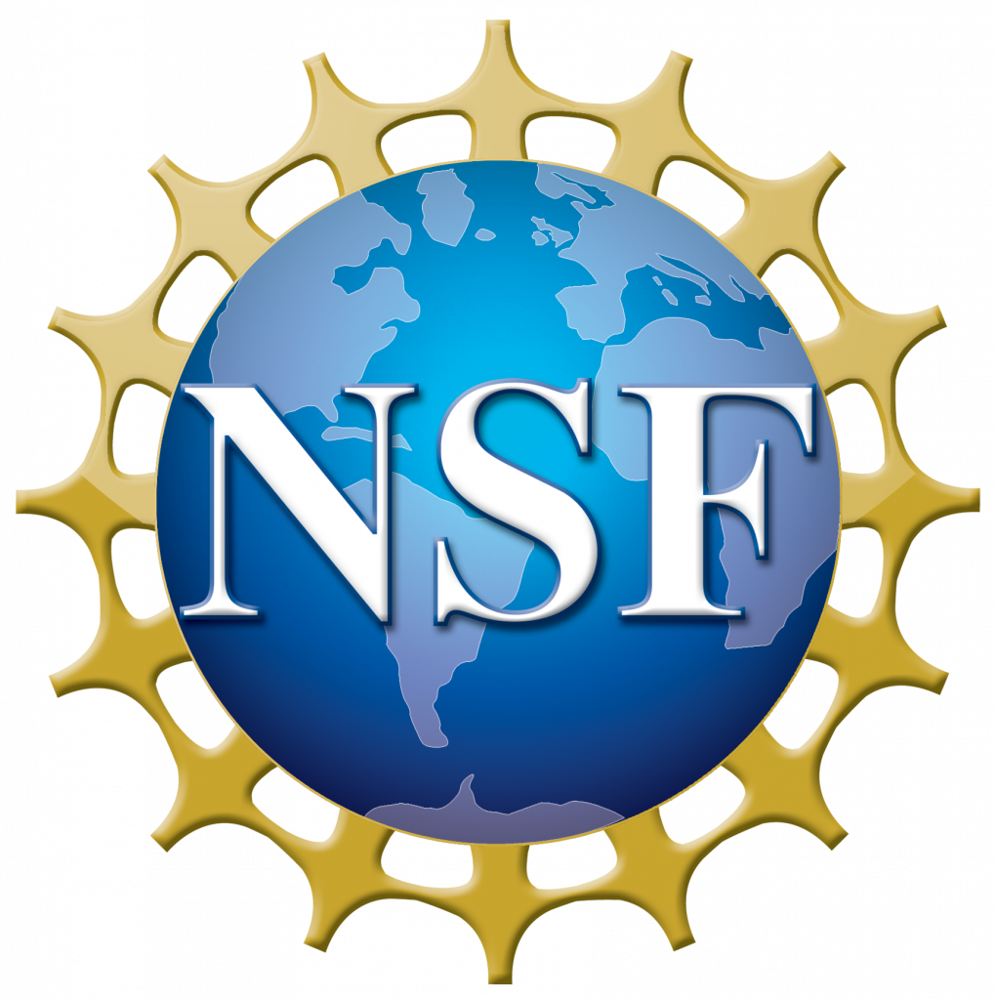
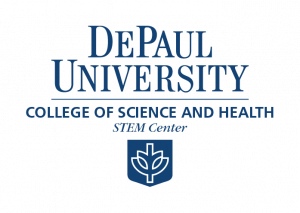

Join PEER for a 4-day, intensive, in-person PEER Field School!
DePaul University
Chicago, IL
Field school dates
December 14-17, 2023
Applications due
October 13, 2023
PEER enhances the professional growth of participants and changes career trajectories. Our comprehensive professional development covers project design, management, mentoring, communication, and understanding community values. This ‘full stack’ of activities builds your research abilities. No matter where you are in your education research journey, we’ll take you to the next step.
Can’t make this one? There are more.
Schedule Overview
To build a supportive community, participants must actively engage during all sessions in the field school. Partial attendance is not permitted.
See more schedule details on the syllabus
Who Should Attend?
PEER targets a broad diversity of experience and interest in discipline-based education research (DBER). The workshop is appropriate for:
- Faculty not currently engaged in DBER but interested in learning about theories and methodologies for possible future research
- Current DBER researchers looking to build or broaden their network of collaborators and engage in generative discussions about existing and new projects
- Graduate students or postdoctoral researchers who want to learn more about DBER project management and building a successful research program
- Faculty at teaching-focused universities interested in using research methodology to improve or assess their teaching and/or publish in Scholarship of Teaching & Learning
This field school is centered on building regional capacity and community. We welcome all applicants who work or reside within a two-hour radius of San Diego; applicants outside of this radius should make a strong case for their current or future ties to the DBER community in this geographic area.
What do we do?
PEER builds core competencies in education research
PEER enhances the professional growth of participants and changes career trajectories. Our comprehensive professional development covers project design, management, mentoring, communication, and understanding community values. This ‘full stack’ of activities enhances research abilities. We focus on the participants’ interests and projects, fostering motivation and improving success chances.
Community Building and Networking
PEER promotes peer feedback and community foundation, providing a sense of inclusion in the DBER field and fostering research identity. The networking opportunities at PEER kickstart collaborations and expand professional networks. PEER supports participants from all STEM disciplines, and we focus on emerging education researchers, whatever their career level.
PEER builds academic currency
Our support includes guiding participants in writing, a key element of academic research. PEER engagement leads to numerous publications, grant proposals, and successful tenure & promotion portfolios. These publications span several years, suggesting PEER’s lasting impact on participants’ professional trajectories.
Application and Registration
Applications due October 13, 2023; we hope to make notifications by October 27, 2023.
It is expected that you will participate for the full field school; partial participation is not allowed.
- Registration includes lunch, coffee & snacks, optional breakfast, and a parking pass (if needed).
- We have arranged for housing on the RIT campus for non-local participants. A small number of scholarships are available to help defray the cost of housing. You will indicate on your application whether you need housing and if you would like to apply for a scholarship.
Thanks to a grant from the NSF, there is no cost for registration.
Thanks to a grant from the NSF, registration costs are substantially reduced. Housing costs at registration (for participants without scholarships who plan to stay on RIT campus) are $450.
Registration for all participants is $450, regardless of career status.
Registration is free for participants from the hosting institution. Participants from other regional institutions will pay $100 at registration.
Facilitators
Sponsors


This PEER field school is sponsored by DePaul University’s College of Science and Health STEM Center.